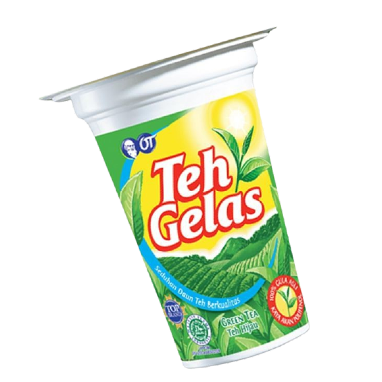
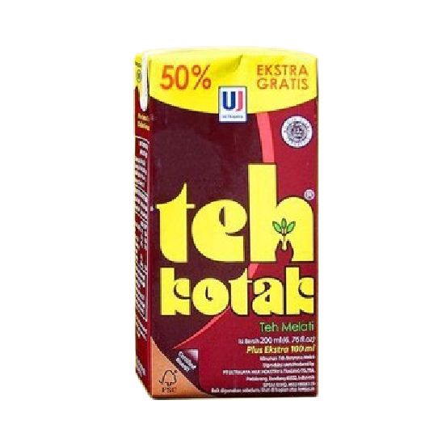
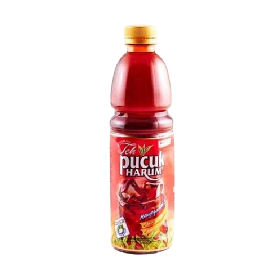
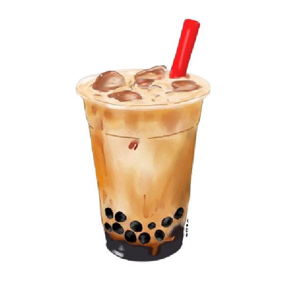
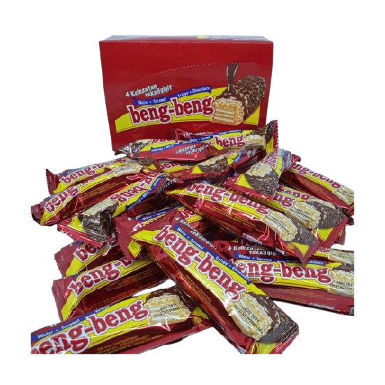
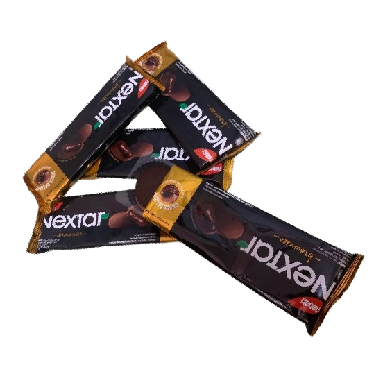
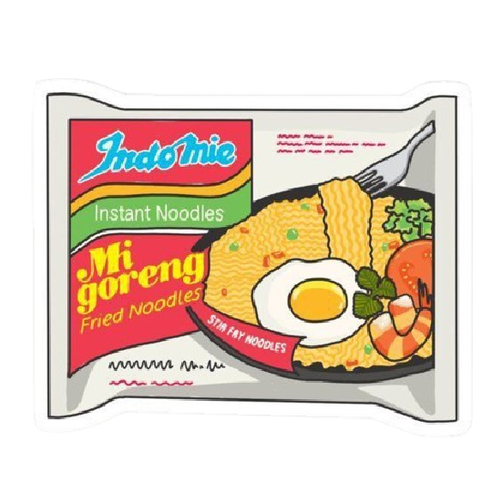
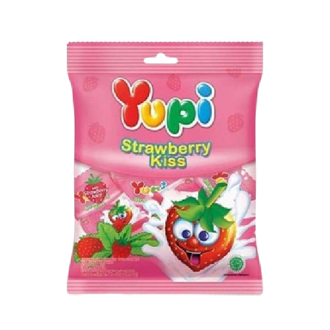
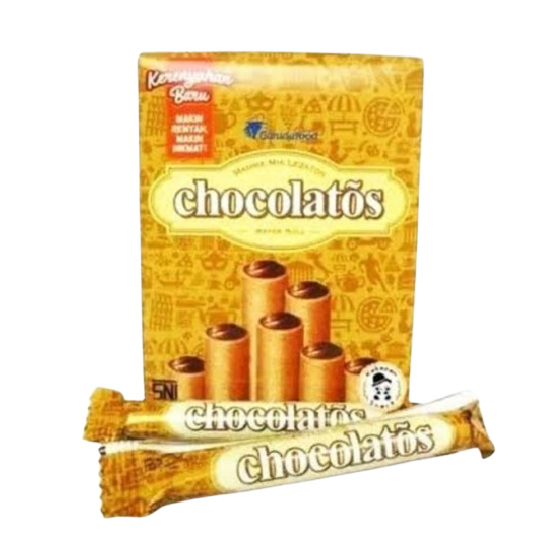

Kandungan Gula Pada Makanan
dan Minuman Manis

Teh Gelas 160ml
Kandungan Gula : 2 Sendok Teh
Gram : 9 Gram Gula

Teh Kotak 200ml
Kandungan Gula : 4 Sendok Teh
Gram : 16 Gram Gula

Teh Pucuk Harum 240ml
Kandungan Gula : 4½ Sendok Teh
Gram : 18 Gram Gula

Boba Milk Tea 475ml
Kandungan Gula : 9.5 Sendok Teh
Gram : 38 Gram Gula

Minuman Serbuk Instant (1 Sachet)
Kandungan Gula : 2-6 Sendok Teh
Gram : 8-24 Gram Gula

Beng - Beng 20gr
Kandungan Gula : 1¾ Sendok Teh
Gram : 9 Gram Gula

Nextar (1 Bungkus 3 Buah)
Kandungan Gula : 3 Sendok Teh
Gram : 12 Gram Gula

Indomie Goreng (1 Bungkus)
Kandungan Gula : 2 Sendok Teh
Gram : 8 Gram Gula

Yupi Strawberry Kiss (1 Biji)
Kandungan Gula : 3 Sendok Teh
Gram : 12 Gram Gula

Chocolatos Wafer Roll (1 Bungkus)
Kandungan Gula : 1 Sendok Teh
Gram : 4 Gram Gula